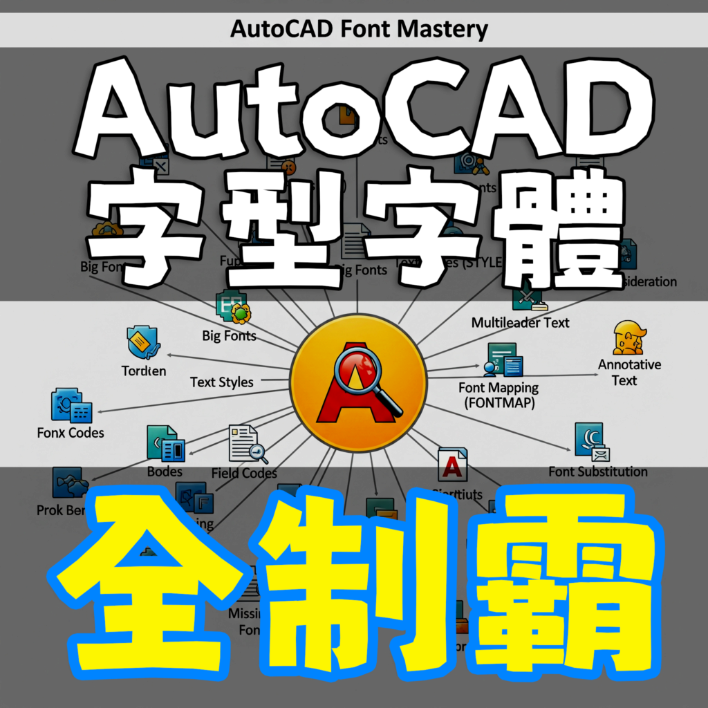

▼函授教學主題：AutoCAD字型字體全制霸-線上課程
介紹：全新AutoCAD字型字體全攻略教學，本課程適合新手及老手，專為 AutoCAD 繪圖員、工程師、設計師 而設計，帶你從基礎到進階，全面掌握文字與字體控制！課程贈送程式讓職場工作事半功倍
作者：Tiger&蘋果爸
版本：AutoCAD 2026
語言：中文影音教學
規格：課程共計10個主題範例(113分鐘)
售價：NT1600元 優惠1200元
解鎖工具：字體對映檔、大字體設置及一鍵字型設定程式(贈小程式)。
出版日期： 2025年10月中
註：附有DWG範例供操作練習，還有相關教學文件筆記。
💡全攻略徹底解決💡不再怕開啟 DWG 出現文字問號、缺少字體的惡夢
📘 課程大綱說明 📘
1️⃣文字型式大字體
說明文字樣式 (Style) 與「大字體 (Big Font)」的搭配，解決中英文顯示問題。
2️⃣圖面文字顯示
控制圖面中文字的呈現方式，包含字體載入、缺字處理、顯示設定。
3️⃣指定替代字體檔
說明 FONTALT 與 FMP（字體對映檔）的使用，如何在缺少字體時指定替代。
4️⃣標註文字設置
設定標註 (Dimension) 的文字高度設置方式，確保圖面一致性。
5️⃣文字及屬性定義
說明 TEXT、MTEXT 與 ATTDEF（屬性定義）的差異與應用。
6️⃣字體對映檔程式
實作 acad.fmp 對映檔工具，建立缺字字體的替代規則。
7️⃣掛入 SHX 字體檔
安裝與管理 SHX 字體檔，確保不同電腦間 DWG 開啟一致。
8️⃣SHX 造型線型檔
利用 SHX 字體建立特殊線型（帶文字/符號的虛線）。
9️⃣大字體設定程式
自動化大字體設定，快速套用中文字體環境。
🔟文字型式設定程式
以程式化方式建立/修改文字樣式，提升效率與一致性。
☆教授軟體為AutoCAD 2026版本，使用其他 AutoCAD 版本也可學習（介面大同小異），而且教授的標準流程觀念都是通用的，所以學習上不會有問題，這點請大家放心，參與練習過程中有任何疑慮，請回「顧問論壇」或「FB社團」提問討論，讓你學習無後顧之憂！
👇可獲得 字型字體全制霸_程式工具👇
🚨字型字體全制霸_課程簡介_PDF下載👉 https://app.box.com/s/k5mucg8rp88hs3ehw7apyxfr9tvwd4fr
★注意：線上課程影片頻道綁定「GMAIL信箱」，透過電腦線上觀看影片時(無期限)，必需要「登入GOOGLE帳戶」！
註：如遇播放問題，可改用「彈出式視窗」全螢幕觀看影片。

👇外掛程式(參加課程即可取得)
1️⃣字體對映檔程式
2️⃣大字體設置程式
3️⃣文字型式設置程式
🎀 字型字體全制霸_線上課程訂購中
👉 https://autocad-tw.1shop.tw/l23w94 👈
👇AutoCAD顧問線上課程 - 課程討論區
https://www.autocad-tw.com/f72-forum
👇AutoCAD顧問線上課程 - Q&A
https://www.autocad-tw.com/t23024-topic
👇[說明]觀看線上課程需綁定GMAIL信箱
https://www.autocad-tw.com/t22774-topic
👇[說明]線上課程下載範例步驟
https://www.autocad-tw.com/t23813-topic
👇[說明]關於線上課程影片觀看技巧